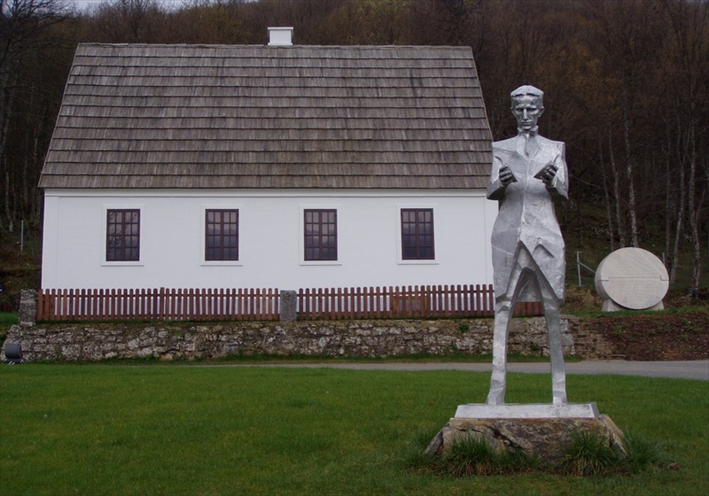

1856
Nikola Tesla is born on July 10 in Smiljan, Austrian Empire (modern-day Croatia). He was born during a lightning storm, which his family saw as a bad omen.

Nikola Tesla (1856-1943) was a Serbian-American inventor, electrical engineer, mechanical engineer, and futurist best known for his contributions to the design of the modern alternating current (AC) electricity supply system.
Nikola Tesla is born on July 10 in Smiljan, Austrian Empire (modern-day Croatia). He was born during a lightning storm, which his family saw as a bad omen.
Tesla begins his studies at the Austrian Polytechnic in Graz, where he excels in his first year. He develops an interest in electricity and magnetism.
Tesla moves to the United States and begins working for Thomas Edison. Their relationship soon sours due to differences in approach and Edison's alleged refusal to pay Tesla for his work.
Tesla files his first patents related to his polyphase alternating current system. He gives a lecture on his AC system to the American Institute of Electrical Engineers, gaining significant attention.

Tesla invents the Tesla Coil, a high-voltage transformer circuit used to produce high-voltage, low-current, high-frequency alternating-current electricity.
Tesla demonstrates wireless lighting and the transmission of electric power by electromagnetic fields at the World's Columbian Exposition in Chicago.
Nikola Tesla passes away on January 7 in New York City at the age of 86. His contributions to science and technology were vast, but many of his ideas remained unrealized during his lifetime.